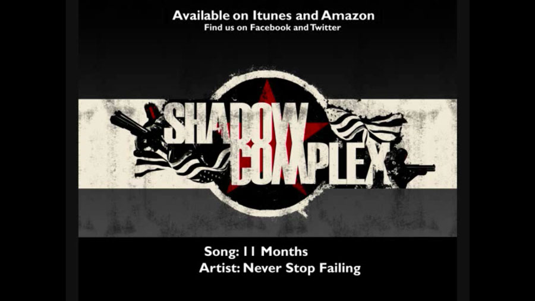

11 Months
Never Stop Failing, a hip-hip group from Provo, Utah, featuring Jeff Wood and Chad Mustard, invited me to sing on a couple tracks for an album in 2009. One of the songs, 11 Months, was featured in the hit XBOX Live Arcade game Shadow Complex.